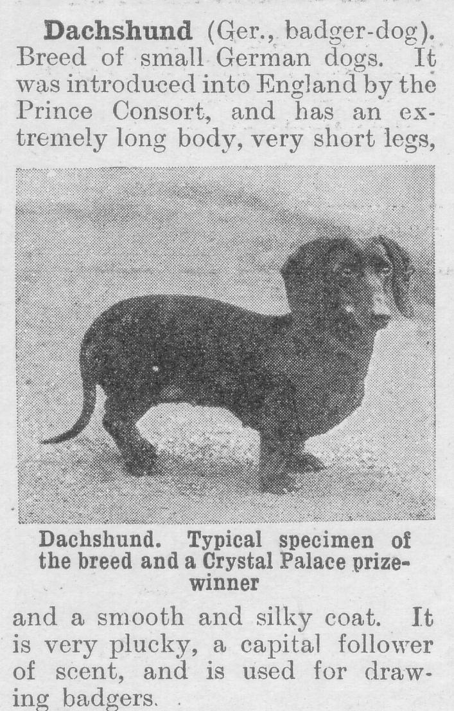

Tuesday, September the 7th, 2004
back to: title, date or indexes
Sir : Idly perusing your website the other day, I couldn't help but be reminded of the time when I was trapped in a wind tunnel with an enormous bittern, having wandered in there by accident while attempting to draw badgers with my Dachshund (see cutting reproduced below). Perhaps I should have used a pencil instead? Yours amicably, Max Décharné of That Ilk
